1. Introduction
WildFly 8 (nee JBoss Application Server 7) is a lightweight, flexible, Java EE 7 compliant, polyglot, and open source application server.
This self-paced hands-on lab gets you introduced to the basic features of WildFly 8.
|
Note
|
This document is a work in progress. |
1.1. Getting Started
Download the WildFly 8 ‘Application Server Distribution’ zip file from http://wildfly.org/downloads/ and unzip.
Lets get familiar with the directory structure.
| Directory | Purpose |
|---|---|
appclient |
Configuration files, deployment content, log files, and writeable areas used by the application client from this installation |
bin |
Startup scripts, startup configuration files and other command line utilities |
docs |
XML Schema definition files and sample configurations |
domain |
Configuration files, deployment content, log files, and writeable areas used by the managed domain from this installation |
domain/lib/ext |
Directory for installed library jars referenced by applications using the Extension-List mechanism for this domain |
domain/servers |
Writable area for each application server instance that runs in this domain. Each server has its own directory., created when the server is started. |
modules |
Various modules used in the server |
standalone |
Configuration files, deployment content, log files, and writeable areas used by the single standalone server from this installation |
standalone/deployments |
Directory for filesystem-based automatic deployment |
standalone/lib/ext |
Directory for installed library jars referenced by applications using the Extension-List mechanism for this instance |
welcome-content |
Default welcome page content |
1.1.1. Standalone and Managed Domain
WildFly 8 can be started in two different modes:
-
A standalone server is an independent instance. It can be started using
bin/standalone.shlaunch script on Unix-variety of machines andbin/standalone.baton Windows. -
A managed domain that allows you to run and manage a multi-server topology and manage multiple WildFly instances from a single control point. It can be started using
bin/domain.shlaunch script on Unix-variety of machines andbin/domain.baton Windows.A Domain Controller is the central management control point for the collection of servers in the ‘domain’. More details about starting WildFly in managed domain mode, server topology and central management is explained in Clustering, Replication and Failover.
1.1.2. Web Profile and Full Platform
Java EE defines profiles that represent a configuration of the full platform suited to a particular class of applications. The Java EE Web Profile is defined as a separate specification in the platform, and is defined as a subset of technologies contained in the platform and targeted toward the developers of modern web applications.
WildFly supports both Web Profile and Full Platform by defininig ‘configuration profiles’ in different files. These profiles are defined in ‘standalone/configuration/*.xml’ files for standalone instance and ‘domain/configuration/domain.xml’ for managed domain.
-
Start a WildFly instance in web profile
./bin/standalone.shThis starts WildFly standalone instance server in web profile. By default it refers to
standalone\configuration\standalone.xmlconfiguration file which offers more capabilities than just web profile.Access http://localhost:8080 and see the following page to make sure the server is running correctly.
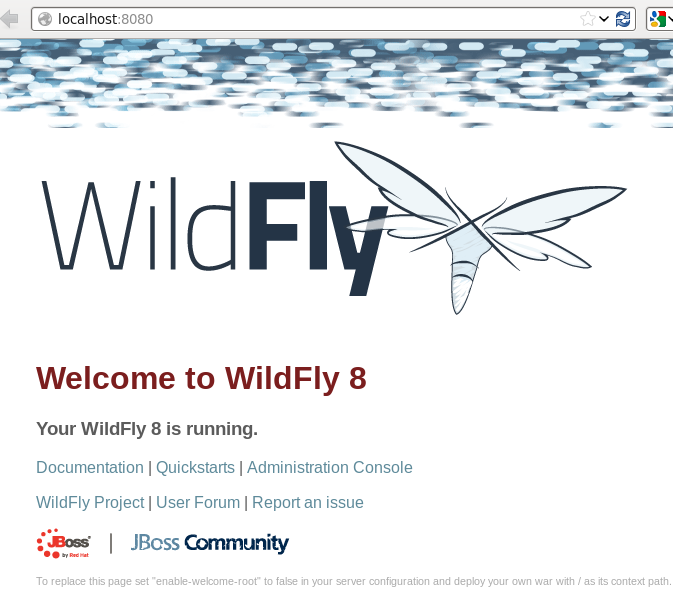Use Ctrl+C to stop the running server.
-
Start in full platform by specifying the configuration as:
./bin/standalone.sh -c standalone-full.xmlThe name of the exact configuration file from ‘standalone/configuration’ directory is specified as the parameter.
Use Ctrl+C to stop the running server.
1.1.3. Multiple instances on the same machine
Multiple instances of standalone server can be started on the same machine by specifying a port offset option to the standalone.sh or standalone.bat script.
-
Start another instance of standalone server at port 9080 using the following command:
./bin/standalone.sh -Djboss.socket.binding.port-offset=1000This will start another standalone instance server on port 9080 (=8080 + 1000) as the default application port and 10990 (=9990 + 1000) as the default management port. These port numbers would differ if non-default ports were used.
After the server is stated the welcome page is now accessible at http://localhost:9080.
Use Ctrl+C to stop the running server.
2. Deploying Applications to WildFly
Purpose: This section explains different ways to deploy Java EE 7 applications to WildFly.
Make sure to start a WildFly standalone instance for each sub-section unless stated otherwise. A standalone instance can be started as:
./bin/standalone.sh2.1. File system
Deploying archives such as war, ear, and rar files using file system is as simple as copying to standalone/deployments directory. The deployment can be configured for auto-deploy or manual mode.
Purpose: This section explains how to auto-deploy a Java EE 7 application to WildFly using filesystem commands.
Any archive can be placed in standalone/deployments directory and is automatically deployed to the server.This is the default behavior.
|
Caution
|
This deployment mode is only intended to be used during development phase. Other modes are recommended if running production systems. |
Copy the war file to standalone/deployments directory using the following command:
cp target/javaee7-1.0-SNAPSHOT.war /Users/arungupta/workspaces/wildfly/build/target/wildfly-8.0.0.Final-SNAPSHOT/standalone/deploymentsVerify the deployed application by accessing the webpage http://localhost:8080/javaee7-1.0-SNAPSHOT/EmployeeList and see the output as:
2.2. Command Line Interface
Purpose: This section discusses different ways to deploy an application to WildFly using Command Line Interface.
2.2.1. jboss-cli
bin/jboss-cli.sh or bin/jboss-cli.bat is Command Line Interface management tool for a standalone server or a managed domain. It allows a user to connect to a standalone server or domain controller and execute management operations.
More details about using jboss-cli for managing the server are available in Management using Command Line Interface (jboss-cli).
Purpose: This section explains how to deploy a Java EE 7 application to WildFly using ‘jboss-cli’.
‘jboss-cli’ can be used to deploy applications using the interactive console or in a non-interactive manner.
Interactive
-
Use jboss-cli to connect with the existing standalone instance by giving the following command:
jboss-cli.sh -cThe
-cswitch connects using the default host (‘localhost’) and management port (‘9990’). These values are specified in ‘bin/jboss-cli.xml’ and can be updated.This opens up the ‘jboss-cli’ interactive console and shows the following prompt:
[standalone@localhost:9990 /]The prompt indicates that ‘jboss-cli’ is connected to a standalone instance’s management port.
-
Deploy the application by giving the following command in console:
deploy target/javaee7-1.0-SNAPSHOT.warThe directory name of the war file in the command may be different depending upon how ‘jboss-cli’ was invoked. Verify the server log to ensure that the application was redeployed. Look for specific timestamp in the log entries.
Tip--forceswitch can be included in the command to replace the existing application. -
Verify the deployment status by typing the following command
deployment-infoin the console:deployment-infoand see the output as:
NAME RUNTIME-NAME PERSISTENT ENABLED STATUS javaee7-1.0-SNAPSHOT.war javaee7-1.0-SNAPSHOT.war true true OKVerify the server log to ensure that the application was deployed. Look for specific timestamp in the log entries.
-
Undeploy the application by giving the following command:
undeploy javaee7-1.0-SNAPSHOT.war -
Type
exit‘quit’ to exit ‘jboss-cli’ interactive console.
Non-interactive
Non-interactive mode allows to support scripts and other types of command line or batch processing.
-
Deploy the application using the following command:
jboss-cli.sh --connect --command="deploy target/javaee7-1.0-SNAPSHOT.war --force"The directory name of the war file in the command may be different depending upon how ‘jboss-cli’ was invoked. Verify the server log to ensure that the application was redeployed. Look for specific timestamp in the log entries.
Verify the deployed application at http://localhost:8080/javaee7/EmployeeList and look for a similar output.
-
Verify the deployment status by giving the following command:
./bin/jboss-cli.sh --connect --command=deployment-info -
Undeploy the application by giving the following command:
./bin/jboss-cli.sh --connect --command="undeploy javaee7-1.0-SNAPSHOT.war"
2.2.2. Curl
curl is a free and popular command line tool for transfering data using URL syntax. If you don’t have it installed on your machine then it can be downloaded from http://curl.haxx.se/download.html.
Purpose: This section explains how to deploy a Java EE 7 application to WildFly using curl.
Deploying applications using curl is a two-step process.
-
Upload your archive to WildFly using the following command
curl -F "file=@target/javaee7-1.0-SNAPSHOT.war" --digest http://u1:p1@localhost:9990/management/add-contentThis command:
-
Makes a POST request using form-encoded (
-F) data with one field (file) defining the location of the WAR file -
target/javaee7-1.0-SNAPSHOT.waris the location of the WAR file -
u1is the administrative user with passwordp1 -
localhost:9090is the default management host and port for WildFly instance -
WildFly management port uses digest authentication and that is defined using
–digest -
Prints the output as something like:
{“outcome” : “success”, “result” : { “BYTES_VALUE” : “+Dg9u1ALXacrndNdLrT3DQSaqjw=” }}
-
-
Deploy the uploaded archive using the following command:
curl -S -H "Content-Type: application/json" -d '{"content":[{"hash": {"BYTES_VALUE" : "+Dg9u1ALXacrndNdLrT3DQSaqjw="}}], "address": [{"deployment":"javaee7-1.0-SNAPSHOT.war"}], "operation":"add", "enabled":"true"}' --digest http://u1:p1@localhost:9990/managementThis command:
-
Sends a POST request (
-d) with JSON payload -
The value assigned to
resultname in the JSON response of previous command is used in this command -
Content type of the payload is explicitly specified to be
application/json -
addcommand triggers the deployment of the archive -
Application archive is enabled as well, as opposed to not by default
-
As in previous command,
u1is the administrative user with passwordp1 -
As in previous command,
localhost:9090is the default management host and port for WildFly instance -
As in previous command, WildFly management port uses digest authentication and that is defined using
–digest
-
2.2.3. HTTP APIs (TBD)
Purpose: This section explains how to deploy a Java EE 7 application to WildFly using HTTP API.
2.3. Admin Console
The Admin Console is a web-based administration console and available at http://localhost:9990/console.
Purpose: This section explains how to deploy a Java EE 7 application to WildFly using web-based Administration Console.
-
A new user in the management realm needs to be added before the admin console can be accessed.
A new user can be added in the management realm using
bin/add-user.shscript. This can be done non-interactively by giving the following command:./bin/add-user.sh -u sheldon -p bazingaThe output of the command looks like:
Added user 'sheldon' to file '/Users/arungupta/workspaces/wildfly/build/target/wildfly-8.0.0.Final-SNAPSHOT/standalone/configuration/mgmt-users.properties' Added user 'sheldon' to file '/Users/arungupta/workspaces/wildfly/build/target/wildfly-8.0.0.Final-SNAPSHOT/domain/configuration/mgmt-users.properties'The directory names ‘standalone’ and ‘domain’ indicate that the user is added to both standalone instance and managed domain. The file name indicates that it is added to the management realm.
TipA user can be added to application realm by including -aswitch.Alternatively, the user can be added interactively by invoking the script and entering the values on the prompt as shown:
./bin/add-user.sh What type of user do you wish to add? a) Management User (mgmt-users.properties) b) Application User (application-users.properties) (a): Enter the details of the new user to add. Using realm 'ManagementRealm' as discovered from the existing property files. Username : sheldon Password requirements are listed below. To modify these restrictions edit the add-user.properties configuration file. - The password must not be one of the following restricted values {root, admin, administrator} - The password must contain at least 8 characters, 1 alphanumeric character(s), 1 digit(s), 1 non-alphanumeric symbol(s) - The password must be different from the username Password : baz1ngaa! Re-enter Password : baz1ngaa! What groups do you want this user to belong to? (Please enter a comma separated list, or leave blank for none)[ ]: About to add user 'sheldon' for realm 'ManagementRealm' Is this correct yes/no? *yes* Added user 'sheldon' to file '/Users/arungupta/workspaces/wildfly/build/target/wildfly-8.0.0.Final-SNAPSHOT/standalone/configuration/mgmt-users.properties' Added user 'sheldon' to file '/Users/arungupta/workspaces/wildfly/build/target/wildfly-8.0.0.Final-SNAPSHOT/domain/configuration/mgmt-users.properties' Added user 'sheldon' with groups to file '/Users/arungupta/workspaces/wildfly/build/target/wildfly-8.0.0.Final-SNAPSHOT/standalone/configuration/mgmt-groups.properties' Added user 'sheldon' with groups to file '/Users/arungupta/workspaces/wildfly/build/target/wildfly-8.0.0.Final-SNAPSHOT/domain/configuration/mgmt-groups.properties' Is this new user going to be used for one AS process to connect to another AS process? e.g. for a slave host controller connecting to the master or for a Remoting connection for server to server EJB calls. yes/no? noNow accessing the console at http://localhost:9990/console prompts for a username and password. Enter the username ‘sheldon’ and password ‘bazinga’ and then the console is shown as:
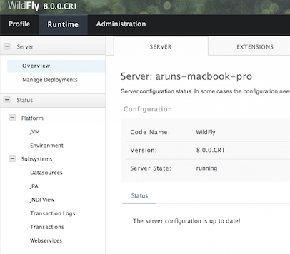The added user can be disabled by giving the following command:
./bin/add-user.sh -u sheldon -dTipUser can be deleted by deleting the corresponding line from domain/configuration/mgmt-users.propertiesandstandalone/configuration/mgmt-users.propertiesfiles. -
Click on ‘Manage Deployments’ to see the output as:
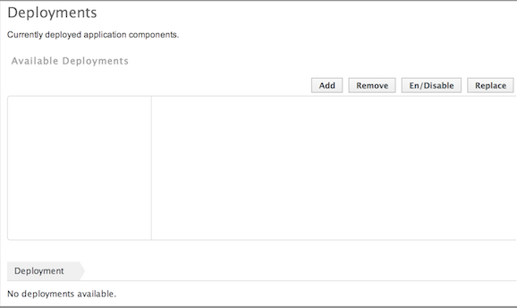 -
Click on ‘Add’ button to see:
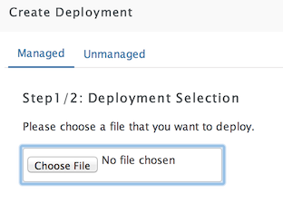 -
Click on ‘Choose File’ button and select the war file.
Click on ‘Next >>’ button. Take the defaults and click ‘Save’.
-
By default the application is not enabled and the console shows:
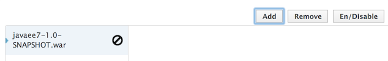Click on ‘En/Disable’ button, click on ‘Confirm’ and now the app is ready to be used. Access the application http://localhost:8080/javaee7-1.0-SNAPSHOT.war/EmployeeList.
2.4. Maven plugin
The wildfly-maven-plugin is used to deploy, redeploy, undeploy or run your application. You can also deploy or undeploy artifacts, such as JDBC drivers, and add or remove resources. There is also the ability to execute CLI commands.
Purpose: This section explains how to deploy Java EE 7 applications to WildFly use the maven plugin.
-
Add the following fragment to samples/javaee7/pom.xml:
<plugin> <groupId>org.wildfly.plugins</groupId> <artifactId>wildfly-maven-plugin</artifactId> <version>1.0.0.Beta1</version> <executions> <execution> <phase>install</phase> <goals> <goal>deploy</goal> </goals> </execution> </executions> </plugin>along with other <plugin> elements.
This adds the ‘wildfly-maven-plugin’ description to ‘pom.xml’. It also invokes the plugin ‘deploy’ target during the standard maven ‘install’ phase.
-
Start a WildFly instance as:
./bin/standalone.sh -
Deploy the application by giving the command:
mvn wildfly:deployor
mvn install -
Access the web page at http://localhost:8080/javaee7/TestServlet and see the output as:
2.5. Java (TBD)
2.6. Ruby (TBD)
2.7. Perl (TBD)
3. Management using Command Line Interface (jboss-cli)
WildFly comes with a Command Line Interface management tool for a standalone server or a managed domain. It allows a user to connect to a standalone server or domain controller and execute management operations available through the management model.
Purpose: This section explains how to manage WildFly using jboss-cli.
3.1. Connecting to a server
-
Start a WildFly standalone server, if not already running, using the following command:
standalone.sh -
Use ‘jboss-cli’ to connect with this instance by giving the following command:
jboss-cli.sh -cThe
-cswitch connects using the default host (‘localhost’) and management port (‘9990’). These values are specified in ‘bin/jboss-cli.xml’ and can be updated.This opens up the ‘jboss-cli’ interactive console and shows the following prompt:
[standalone@localhost:9990 /]The prompt indicates that ‘jboss-cli’ is connected to a standalone instance’s default management port.
-
If WildFly instance is running on a different host and/or port, then
--controllerswitch can be used to specify that information.-
In another shell, start another WildFly instance on a different port using the following command:
./bin/standalone.sh -Djboss.socket.binding.port-offset=10000This will start another WildFly standalone instance on application port 18080 and management port 19090.
-
Use ‘jboss-cli’ to connect with this instance by giving the following command:
jboss-cli.sh -c --controller=localhost:19990This opens up the ‘jboss-cli’ interactive console and shows the following prompt:
[standalone@localhost:19990 /]The prompt indicates that ‘jboss-cli’ is connected to a standalone instance on port ‘19990’.
-
Type ‘exit’ or ‘quit’ in the console to exit out of it.
-
3.2. Resources, Operations, and Commands
WildFly internal management model consists of management resources that that are added, removed, or modified by using operations and commands. Operations are low level but a comprehensive way to manage the server. Commands are more user-friendly, although most of them still translate into operation requests and some of them even into a few composite operation requests.
All resources are organized in a tree. The path to the node in the tree for a particular resource is its address and is identified by /.
Each resource expose information about their state as attributes.
Each resource may support child resources.
All resources expose metadata that describes their attributes, operations, and child types. This metadata can be queried by invoking one or more of the global operations supported by the resource.
Command and operation request history is enabled by default. While in the command line session, you can use the arrow keys to go back and forth in the history of commands and operations.
3.2.1. Operations
-
The operations require one of the following prefixes:
-
:to execute against the current nodeType
:at the prompt and press tab key to see a complete list of operations. This will show the following output:[standalone@localhost:9990 /] : add-namespace read-operation-names take-snapshot add-schema-location read-resource undefine-attribute delete-snapshot read-resource-description upload-deployment-bytes full-replace-deployment reload upload-deployment-stream list-snapshots remove-namespace upload-deployment-url read-attribute remove-schema-location validate-address read-children-names replace-deployment validate-operation read-children-resources resolve-expression whoami read-children-types resolve-internet-address write-attribute read-config-as-xml server-set-restart-required read-operation-description shutdownTipOperations can be auto completed by using the tab key. For example, type :rat the prompt and press tab key to see the list of operations beginning with that letter.Read a simple attribute using
read-attributeoperation as shown:[standalone@localhost:9990 /] :read-attribute(name=release-version)This will show the output as:
{ "outcome" => "success", "result" => "8.0.0.Final-SNAPSHOT" } -
./to execute against a child node of the current path[standalone@localhost:9990 deployment] ./javaee7-1.0-SNAPSHOT.war:read-resourceThis command reads resource’s attribute, the deployed war file in this case, values along with either basic (default) or complete information about any child resources. Detailed information about the resource can be obtained by adding
recursive=trueparameters as:[standalone@localhost:9990 /deployment] ./javaee7-1.0-SNAPSHOT.war:read-resource(recursive=true) -
/to execute an operation against the root node[standalone@localhost:9990 /] /socket-binding-group=standard-sockets/socket-binding=http:read-attribute(name=bound-port)This command traverses a path and reads an attribute on the leaf node. In this case it reads the port and displays the output as:
{ "outcome" => "success", "result" => 8080 }
-
-
Read the complete list of operations supported by a resource by typing
read-operation-namesat the prompt and see the output as:[standalone@localhost:9990 /] :read-operation-names { "outcome" => "success", "result" => [ "add-namespace", "add-schema-location", "delete-snapshot", "full-replace-deployment", "list-snapshots", "read-attribute", "read-children-names", "read-children-resources", "read-children-types", "read-config-as-xml", "read-operation-description", "read-operation-names", "read-resource", "read-resource-description", "reload", "remove-namespace", "remove-schema-location", "replace-deployment", "resolve-expression", "resolve-internet-address", "server-set-restart-required", "shutdown", "take-snapshot", "undefine-attribute", "upload-deployment-bytes", "upload-deployment-stream", "upload-deployment-url", "validate-address", "validate-operation", "whoami", "write-attribute" ] } -
A number of operations can be applied to every resource. Such operations are called global operations.
read-operation-namesis one such global operation. Another commonly used global operation isread-resourcethat reads resource’s attribute values along with either basic or complete information about any child resources. -
Read complete detail about
read-operation-descriptionoperation by giving the command:[standalone@localhost:9990 /] :read-operation-description(name=read-operation-names)and see the output as:
{ "outcome" => "success", "result" => { "operation-name" => "read-operation-names", "description" => "Gets the names of all the operations for the given resource", "request-properties" => {"access-control" => { "type" => BOOLEAN, "description" => "If 'true' only operations the user is allowed to see are returned, and filtered operations are listed in the 'access-control' response header.", "expressions-allowed" => false, "required" => false, "nillable" => true, "default" => false }}, "reply-properties" => { "type" => LIST, "value-type" => STRING, "description" => "The operation names" }, "read-only" => true } }Try this operation for some other operations and read the output.
3.2.2. Commands
-
Type
help --commandsat the jboss-cli prompt to see a complete list of commands available in current context. This will show the following output:[standalone@localhost:9990 /] help --commands alias deploy if read-attribute undeploy batch deployment-info jdbc-driver-info read-operation unset cd deployment-overlay ls reload version clear echo module run-batch xa-data-source command echo-dmr patch set : connect help pwd shutdown data-source history quit tryThis can also be achieved by pressing the tab key at the prompt. The list of commands depends upon the current context, i.e. it may change based upon the node address in the domain management model.
TipCommands can be auto completed by using the tab key. For example, type letter dat the prompt and press tab key to see the list of commands beginning with that letter. Enter space after choosing the command and press tab key again to see the list of arguments to the command. -
Help for any command is available by typing the command name and using
--helpoption. For example:[standalone@localhost:9990 /] deploy --helpwill show the following output:
SYNOPSIS deploy ((file_path | --url=deployment_url) [--script=script_name] [--name=deployment_name] [--runtime-name=deployment_runtime_name] [--force | --disabled] [--unmanaged]) | --name=deployment_name [--server-groups=group_name (,group_name)* | --all-server-groups] [--headers={operation_header (;operation_header)*}] DESCRIPTION Deploys the application designated by the file_path or enables an already existing but disabled in the repository deployment designated by the name . . . -
lscommand list the contents of a node path including node types and attributes. Giving this command on the root node shows the following output:[standalone@localhost:9990 /] ls core-service management-minor-version=0 deployment name=aruns-macbook-pro deployment-overlay namespaces=[] extension process-type=Server interface product-name=undefined path product-version=undefined socket-binding-group profile-name=undefined subsystem release-codename=WildFly system-property release-version=8.0.0.Final-SNAPSHOT launch-type=STANDALONE running-mode=NORMAL management-major-version=2 schema-locations=[] management-micro-version=0 server-state=runningAll entries with name/value pairs are attributes and every thing else is a node.
-
cdcommand changes the current node path to the specified argument.Change the path to ‘management’ node by typing the command:
[standalone@localhost:9990 /] cd core-service=management [standalone@localhost:9990 core-service=management]The command line prompt in the first line shows that the command was issued from the root node. The prompt in the second line shows the updated node name.
-
Deploy an application and check its status by typing the following commands:
[standalone@localhost:9990 /] deploy ~/workspaces/wildfly-lab/samples/javaee7/target/javaee7-1.0-SNAPSHOT.war --force [standalone@localhost:9990 /] deployment-info NAME RUNTIME-NAME PERSISTENT ENABLED STATUS javaee7-1.0-SNAPSHOT.war javaee7-1.0-SNAPSHOT.war true true OK -
Change the HTTP application port from a default value of 8080 to 8090 by giving the following command:
[standalone@localhost:9990 /] /socket-binding-group=standard-sockets/socket-binding=http:write-attribute(name=port,value=8090)and see the output as:
{ "outcome" => "success", "response-headers" => { "operation-requires-reload" => true, "process-state" => "reload-required" } }The command output indicates that the server should be reloaded. This can be achieved by typing
reloadcommand at the prompt. Now the application is accessible at http://8090/javaee7-1.0-SNAPSHOT/EmployeeList instead of the port 8080.Any change to the management model is persisted to the configuration file. Lets change the port back to 8080 by giving the following command:
[standalone@localhost:9990 /] /socket-binding-group=standard-sockets/socket-binding=http:write-attribute(name=port,value=8080)
3.3. Batch
The batch mode allows one to group commands and operations and execute them together as an atomic unit, i.e., if at least one of the commands or operations fails, all the other successfully executed commands and operations in the batch are rolled back.
Only the commands that translate into operation requests are allowed in the batch. The batch, actually, translates into a composite operation request.
Batch mode can be composed interactively using jboss-cli prompt or non-interactively where the set of commands and operations are saved in a file and loaded at the prompt.
3.3.1. Interactive Batch
-
Start batch mode by typing the
batchcommand:[standalone@localhost:9990 /] batch [standalone@localhost:9990 / #]The prompt changes to
#indicating that the CLI is in batch mode. -
Enter the operations and commands that need to be included in batch:
[standalone@localhost:9990 / #] data-source add --name=myDataSource --jndi-name=java:jboss/datasources/MyDataSource --user-name=sa --password=sa --driver-name=h2 --connection-url=jdbc:h2:mem:myData [standalone@localhost:9990 / #] deploy ~/workspaces/wildfly-lab/samples/javaee7/javaee7-1.0-SNAPSHOT.warThis command is creating a JDBC resource and deploys an application that uses it.
-
Finally run the commands entered in the batch by giving the following command:
[standalone@localhost:9990 / #] run-batchIf the command is executed successfully then it is discarded and the CLI leaves the batch mode. If any of the command or operation in the batch fails then the CLI gives an error and all steps executed so far are rolled back.
3.3.2. Non-interactive Batch
Non-interactive batch is useful for set of commands and operations that are executed frequently. Such commands and operations can be saved to a file and later used as argument to ‘batch’ command.
-
Save the following commands in a text file:
/subsystem=datasources/data-source="java:jboss/datasources/MyDataSource":add(jndi-name="java:jboss/datasources/MyDataSource", driver-name="h2", connection-url="jdbc:h2:mem:myData", user-name="sa", password="sa") deploy ~/workspaces/wildfly-lab/samples/javaee7/target/javaee7-1.0-SNAPSHOT.warand save the file as ‘myScript.txt’.
-
Run the interactive CLI as:
standalone.sh -
Load the script file using
batchcommand:[standalone@localhost:9990 /] batch --file=myScript.txt+ Run the batch using the
run-jobcommand.Alternatively, the file may be loaded and executed in one command:
[standalone@localhost:9990 /] run-batch --file=myScript.txt
3.4. Environment variables
CLI supports variables and are resolved during command line parsing phase. They are useful to store frequently used nodepaths, complex commands or operations, or any other text that needs a shorter and easy to use name.
Variables set during a CLI session are not persisted when the session is terminated. The variables may be stored in .jbossclirc in which case they are persisted across different sessions.
3.4.1. Non-persistent Variables
-
Set a new variable as:
[standalone@localhost:9990 /] set default_port=/socket-binding-group=standard-sockets/socket-binding=http:read-attribute(name=bound-port)This code defines a new variable
default_portand sets its value to the defined operation. Variable names are expected to follow Java identifier format. -
Use this variable in CLI to execute the command:
[standalone@localhost:9990 /] $default_portto see the output as:
{ "outcome" => "success", "result" => 8090, "response-headers" => {"process-state" => "reload-required"} }
3.4.2. Persistent Variables
Persistent variables are stored in .jbossclirc file. The location of this file is checked in the following order:
-
value of system property
jboss.cli.rc -
user’s working directory (as defined by
user.dirsystem property) -
bindirectory
A default .jbossclirc is already included in the bin directory and can be used as a template for user-specific environment setup.
The file contains ‘set’ commands to define the variables, such as:
set default_port=/socket-binding-group=standard-sockets/socket-binding=http:read-attribute(name=bound-port)3.5. GUI
CLI can be started with a GUI instead of a command line. It allows you to browse through different nodes and commands and operations supported on a node. Commands are automatically created and can be submitted to the server. Applications can be deployed and undeployed as well.
-
Type the following command to start CLI with GUI:
standalone.sh --guiThe complete domain model is shown in a separate window as:
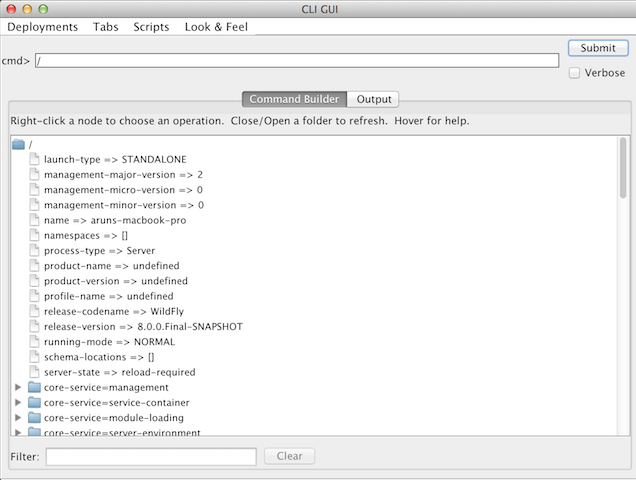 -
Right-click on any node to see the list of supported operations as shown:
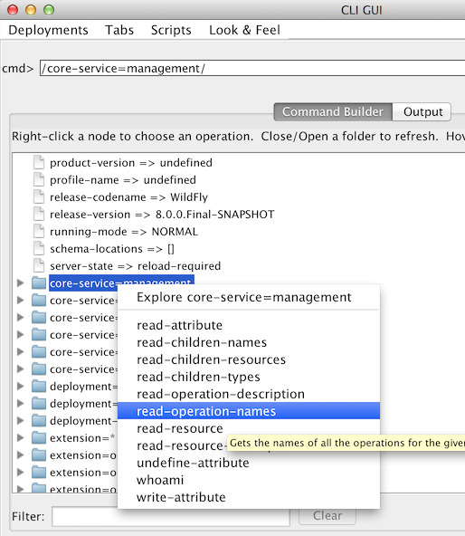The command is dynamically created and populated in the ‘cmd>’ text box.
-
This command can be submitted to the server by clicking on ‘Submit’ button. Command output is shown:
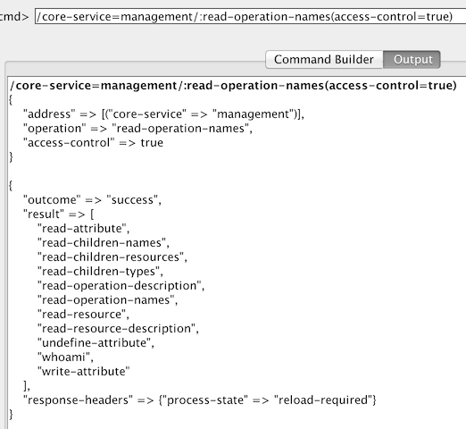 -
Type ‘serv’ in ‘Filter’ box to search for any nodes and attributes that contains this phrase. The output is shown as:
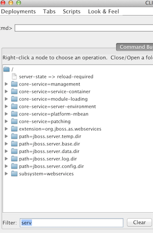
4. Role Based Access Control
Role Based Access Control (RBAC) is the ability to restrict access to system or certain portions of it to authorized users. For JBoss AS 7.x, the web-based administrative console had an all-or-nothing approach. This means user authenticated with management security realm will have all the privileges. This may not be appropriate for mission-critical deployments and a finer-grained control may be required. WildFly 8 introduces RBAC using different roles.
Purpose: This section explains how to configure RBAC for WildFly 8.
There are seven pre-defined roles in two different categories. First four roles are where users are locked out of sensitive data and the next three level roles where users are allowed to deal with sensitive data.
The pre-defined roles are explained below:
| Role | Permissions |
|---|---|
Monitor |
|
Operator |
|
Maintainer |
|
Deployer |
|
Administrator |
|
Auditor |
|
Super User |
|
4.1. Default super user
By default, any user added to the management realm and not belonging to a group is in “Super User” role.
-
Start the server as standalone instance if not already running:
./bin/standalone.sh -
Access Admin Console at http://localhost:9990/console. This prompts for authentication as shown:
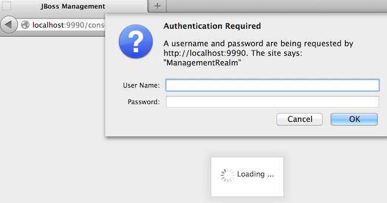Enter the user name ‘sheldon’ and password ‘bazinga’ (as created earlier). Admin console should look like:
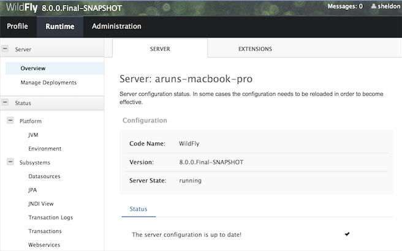This view shows:
-
A new ‘Administration’ tab that allows to map users to roles. This will be done in a later section.
-
Information about the logged in user is shown on top-right as:
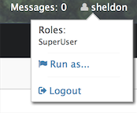Notice the logged in user name is shown.
-
A user in ‘Super User’' role can act to run in any role by clicking on ‘Run as’. Click on ‘Run as’ and select drop-down list box to see the list of available roles as:
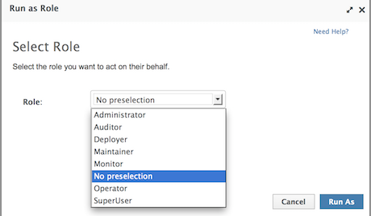 -
Select the ‘Monitor’ role and click on ‘Run As’.
The application has to be reloaded for changes to take effect. Click on ‘Confirm’ to reload the application. After the reload, clicking on the user on top-right in admin console will display the selected role as ‘Run as Monitor’ as shown:

-
Click on ‘Manage Deployments’ and check that ‘Add’, ‘Remove’, and similar buttons are not present as shown:
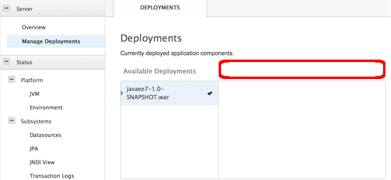 -
Click on ‘Profile’, ‘Data Sources’ and check that all data sources are visible but not editable. This is identified by the fact that ‘Add’, ‘Remove’, and ‘Disable’ buttons are not available as shown.
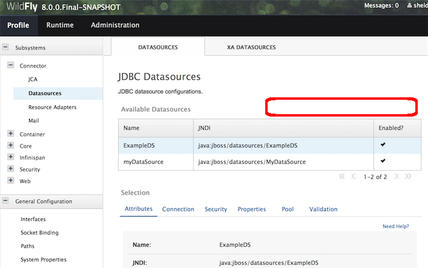 -
Click on ‘Administration’ tab and make sure the user does not have access to it as shown:
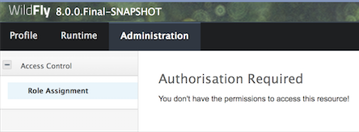
-
-
Feel free to select other roles and observe how different options are enabled/disabled.
-
4.2. Configure ‘rbac’ access control provider
WildFly 8 comes with two access control providers:
-
‘simple’ provider, the default one, gives all privileges to any authenticated administrator. This provides compatibility with older releases.
-
‘rbac’ provider allows you to setup configuration that will map users to different roles.
-
Configure ‘rbac’ access control provider by giving the following command:
jboss-cli.sh -c --command="/core-service=management/access=authorization:write-attribute(name=provider,value=rbac)"This command will change authorization provider to “rbac” and will produce the output as:
{ "outcome" => "success", "response-headers" => { "operation-requires-reload" => true, "process-state" => "reload-required" } } -
The server needs to be restarted as the authorization provider is changed. Give the following command to restart the server:
./bin/jboss-cli.sh -c --command="reload"TipIf the server is running in managed domain then it can be restarted by additionally specifying --host=masterin the command.Check the server log to confirm server restarted, look for specific time stamps.
-
Any existing roles need to be explicitly mapped after the access control provider is changed. Map the user ‘sheldon’ to the role ‘Super User’ by giving the following command:
jboss-cli.sh -c --command="/core-service=management/access=authorization/role-mapping=SuperUser/include=user-sheldon:add(name=sheldon,type=USER)" -
On top-right in admin console, click on the username and click on ‘Logout’ and then ‘Confirm’.
-
Enter the login credentials again (username is ‘sheldon’ and password is ‘bazinga’) to login back into the admin console.
-
4.3. Map users, groups, and roles
WildFly introduces the concept of “groups” in security realms. Users can be directly associated with a role, or can belong to a group and then a group can be associated with a role.
-
Add two users in different groups using
bin/adduser.shscript-
Add first user in a group by giving the following command:
add-user.sh -u penny -p penny1 -g just4fun Added user 'penny' to file '/Users/arungupta/workspaces/wildfly/build/target/wildfly-8.0.0.Final-SNAPSHOT/standalone/configuration/mgmt-users.properties' Added user 'penny' to file '/Users/arungupta/workspaces/wildfly/build/target/wildfly-8.0.0.Final-SNAPSHOT/domain/configuration/mgmt-users.properties' Added user 'penny' with groups just4fun to file '/Users/arungupta/workspaces/wildfly/build/target/wildfly-8.0.0.Final-SNAPSHOT/standalone/configuration/mgmt-groups.properties' Added user 'penny' with groups just4fun to file '/Users/arungupta/workspaces/wildfly/build/target/wildfly-8.0.0.Final-SNAPSHOT/domain/configuration/mgmt-groups.properties' -
Add another user in a different group by giving the following command:
add-user.sh -u leonard -p leonard1 -g geek Added user 'leonard' to file '/Users/arungupta/workspaces/wildfly/build/target/wildfly-8.0.0.Final-SNAPSHOT/standalone/configuration/mgmt-users.properties' Added user 'leonard' to file '/Users/arungupta/workspaces/wildfly/build/target/wildfly-8.0.0.Final-SNAPSHOT/domain/configuration/mgmt-users.properties' Added user 'leonard' with groups geek to file '/Users/arungupta/workspaces/wildfly/build/target/wildfly-8.0.0.Final-SNAPSHOT/standalone/configuration/mgmt-groups.properties' Added user 'leonard' with groups geek to file '/Users/arungupta/workspaces/wildfly/build/target/wildfly-8.0.0.Final-SNAPSHOT/domain/configuration/mgmt-groups.properties'These commands creates the following users:
User Password Group penny
penny1
just4fun
leonard
leonard1
geek
Both users are added for standalone instance and managed domain.
-
-
Click on ‘Administration’ tab to see an output as:

Previously assigned user/role mapping is already shown here.
-
Click on ‘Add’ to assign a new role to user mapping. Type ‘penny’ in ‘User’ textbox and select ‘Monitor’ role as shown:
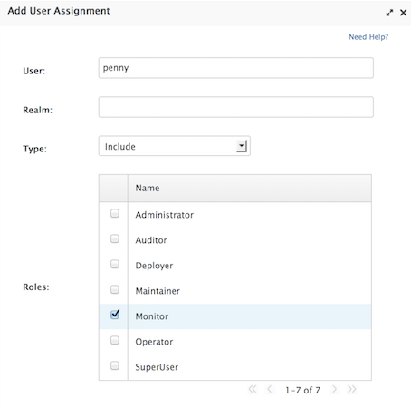Click on ‘Save’.
NoteMultiple roles may be assigned to each user. -
Assign ‘Administrator’ role to user ‘leonard’. The updated admin console looks like as shown:
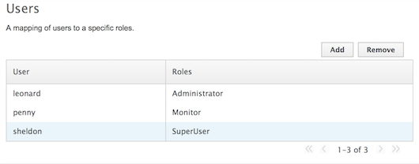
TipGroups, and thus all users in that group, can be assigned one or more roles by clicking on ‘GROUPS’ tab.
4.4. Logging in as different users
-
Click on top-right and select ‘Logout’ to log out of admin console. Login again by using the username ‘penny’ and password ‘penny1’. Note that this user was assigned ‘Monitor’ role.
-
Top-right of admin console shows the logged in user name.

Note that ‘Run as’ is not available any more.
-
Click on ‘Manage Deployments’ to see the output as shown:
This role permits only monitoring and ‘Add’, ‘Remove’, ‘En/Disable’, and ‘Replace’ buttons are not available.
-
Click on ‘Administration’ tab to see a permissiond denied output as:
-
Click on top-right and select ‘Logout’ to log out of admin console. Login again by using the username ‘leonard’ and password ‘leonard1’. Note that this user was assigned ‘Administrator’ role.
-
Top-right of admin console shows the logged in user name.
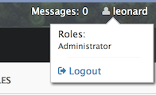Note that ‘Run as’ is not available any more.
-
Click on ‘Deployments’ and confirm that new deployments can be added or existing can be replace, removed, enabled or disabled by the presence of buttons.
-
Click on ‘Administration’ tab and confirm that all information is visible and editable.
4.5. Filtering out commands in ‘jboss-cli’
CLI or ‘jboss-cli’ can authenticate against local WildFly without prompting the user for a username and password. This mechanism only works if the user running the CLI has read access to the “standalone/tmp/auth” directory or “domain/tmp/auth” folder under the respective WildFly installation. If the local mechanism fails then the CLI will fallback to prompting for a username and password.
Alternatively authentication can be forced by explicitly specifying user and password options.
-
Connect using ‘jboss-cli’ using the following command:
jboss-cli.sh --user=penny --password=penny1 -cNote that the user ‘penny’ is in Monitor role.
-
Type
data-sourceon the CLI console and TAB to see the following output:[standalone@localhost:9990 /] data-source --help flush-gracefully-connection-in-pool --name= flush-idle-connection-in-pool add flush-invalid-connection-in-pool disable read-resource enable remove flush-all-connection-in-pool test-connection-in-poolNote that all commands and attributes, even those not permitted for Monitor role, are shown.
-
Try to add a new data source using the following command:
[standalone@localhost:9990 /] data-source add --name=testDataSourceThis command gives the following error:
JBAS013456: Unauthorized to execute operation 'add' for resource '[ ("subsystem" => "datasources"), ("data-source" => "testDataSource") ]' -- "JBAS013475: Permission denied"This is because ‘Monitor’ role does not have permission to add data sources.
-
Type
exitorquitto exit out of CLI console. -
Edit
bin/jboss-cli.xmland change the following element:<access-control>false</access-control>to
<access-control>true</access-control>This element filter out the command and attribute suggestions displayed based on user’s permissions.
-
Connect using ‘jboss-cli’ using the following command:
./bin/jboss-cli.sh --user=penny --password=penny1 -c -
Type
data-sourceon the CLI console and TAB to see the following output:[standalone@localhost:9990 /] data-source --help --name= read-resourceNote that only permitted commands and attributes are shown.
TipTry some other commands and see which ones are accessible or not.
5. Audit Logging
WildFly comes with audit logging built in for management operations affecting the management model. The audit log records can be logged to a file on the server or to syslog. Syslog is a better choice for audit logging since you can log to a remote syslog server, and secure the authentication to happen over TLS with client certificate authentication. This section will only cover default logging in file.
5.1. Turn on audit logging
By default audit logging is turned off and needs to be turned on.
-
Connect using ‘jboss-cli’ using the following command:
jboss-cli.sh --user=sheldon --password=bazinga -cNote you need to provide user and password credentials of a user in Auditor or Super User role.
-
Enable audit logging by giving the following command:
[standalone@localhost:9990 /] /core-service=management/access=audit/logger=audit-log:write-attribute(name=enabled,value=true)This will display the output as:
{"outcome" => "success"}If the user is not in Auditor or Super User role then the following error message will be displayed:
{ "outcome" => "failed", "failure-description" => "JBAS013456: Unauthorized to execute operation 'write-attribute' for resource '[ (\"core-service\" => \"management\"), (\"access\" => \"audit\"), (\"logger\" => \"audit-log\") ]' -- \"JBAS013475: Permission denied\"", "rolled-back" => true }
5.2. Logging JSON records to file
By default audit log records are formatted using JSON and are generated in standalone/data/audit-log.log. This file is generated after audit log is enabled and looks like:
{
"type" : "core",
"r/o" : false,
"booting" : false,
"version" : "8.0.0.Final-SNAPSHOT",
"user" : "sheldon",
"domainUUID" : null,
"access" : "NATIVE",
"remote-address" : "127.0.0.1/127.0.0.1",
"success" : true,
"ops" : [{
"address" : [
{
"core-service" : "management"
},
{
"access" : "audit"
},
{
"logger" : "audit-log"
}
],
"operation" : "write-attribute",
"name" : "enabled",
"value" : true,
"operation-headers" : {
"caller-type" : "user",
"access-mechanism" : "NATIVE"
}
}]
}The main fields in this JSON record are explained below:
| Field Name | Possible Values |
|---|---|
|
|
|
|
|
|
|
The username of the authenticated user. If the operation is logged via the CLI on the same machine as the running server, then the special $local user is used |
|
|
|
List of operations being executed serialized to JSON |
Try a few other management operations and notice how audit-log.log is updated. For example, trying to add a new data source using the following command:
[standalone@localhost:9990 /] data-source add --name=myDataSource2 --jndi-name=java:jboss/datasources/MyDataSource2 --user-name=sa --password=sa --driver-name=h2 --connection-url=jdbc:h2:mem:myDatawill generate the following audit log record:
{
"type" : "core",
"r/o" : false,
"booting" : false,
"version" : "8.0.0.Final-SNAPSHOT",
"user" : "sheldon",
"domainUUID" : null,
"access" : "NATIVE",
"remote-address" : "127.0.0.1/127.0.0.1",
"success" : true,
"ops" : [{
"address" : [
{
"subsystem" : "datasources"
},
{
"data-source" : "myDataSource2"
}
],
"operation" : "add",
"user-name" : "sa",
"password" : "sa",
"jndi-name" : "java:jboss/datasources/MyDataSource2",
"connection-url" : "jdbc:h2:mem:myData",
"driver-name" : "h2",
"operation-headers" : {
"caller-type" : "user",
"access-mechanism" : "NATIVE"
},
"driver-class" : null,
"datasource-class" : null,
"new-connection-sql" : null,
"url-delimiter" : null,
"url-selector-strategy-class-name" : null,
"use-java-context" : null,
"jta" : null,
"max-pool-size" : null,
"min-pool-size" : null,
"initial-pool-size" : null,
"pool-prefill" : null,
"pool-use-strict-min" : null,
"capacity-incrementer-class" : null,
"capacity-decrementer-class" : null,
"security-domain" : null,
"reauth-plugin-class-name" : null,
"flush-strategy" : null,
"allow-multiple-users" : null,
"connection-listener-class" : null,
"connection-properties" : null,
"prepared-statements-cache-size" : null,
"share-prepared-statements" : null,
"track-statements" : null,
"allocation-retry" : null,
"allocation-retry-wait-millis" : null,
"blocking-timeout-wait-millis" : null,
"idle-timeout-minutes" : null,
"query-timeout" : null,
"use-try-lock" : null,
"set-tx-query-timeout" : null,
"transaction-isolation" : null,
"check-valid-connection-sql" : null,
"exception-sorter-class-name" : null,
"stale-connection-checker-class-name" : null,
"valid-connection-checker-class-name" : null,
"background-validation-millis" : null,
"background-validation" : null,
"use-fast-fail" : null,
"validate-on-match" : null,
"spy" : null,
"use-ccm" : null,
"enabled" : null,
"reauth-plugin-properties" : null,
"exception-sorter-properties" : null,
"stale-connection-checker-properties" : null,
"valid-connection-checker-properties" : null,
"connection-listener-property" : null,
"capacity-incrementer-properties" : null,
"capacity-decrementer-properties" : null
}]
}6. Clustering, Replication and Failover
Domains can span multiple physical (or virtual) machines with all WildFly instances on a given host under the control of a Host Controller process. The Host Controllers interact with the Domain Controller to control the lifecycle of the WildFly instances running on that host and to assist the Domain Controller in managing them.
6.1. HTTP
6.2. EJB
7. Configure Logging
WildFly provides comprehensive logging output from different subsystems. User applications can also leverage the same framework to generate logging output.
Purpose: This section explains how to use and configure logging in WildFly.
-
Change log levels of existing subsystems
-
Change logging format of existing logger
-
Create custom logger
-
Where to copy custom logging handler ? (class loading)
8. Undertow
Undertow is the default web server in the Wildfly Application Server.
Undertow is a flexible performant web server written in java, providing both blocking and non-blocking API’s based on NIO.
Undertow has a composition based architecture that allows you to build a web server by combining small single purpose handlers. The gives you the flexibility to choose between a full Java EE servlet 3.1 container, or a low level non-blocking handler, to anything in between.
Undertow is designed to be fully embeddable, with easy to use fluent builder APIs. Undertow’s lifecycle is completely controlled by the embeding application.
Purpose: This section explains how to build applications using Undertow.
8.1. Simple HTTP
8.2. Servlet
8.3. WebSocket
8.4. Server Container Initializer
9. Realms
9.1. JDBC
9.2. Security
10. JBoss Modules
JBoss Modules is a standalone implementation of a modular (non-hierarchical) class loading and execution environment for Java.
11. JRuby-on-Rails
12. Forge
13. Arquillian
14. Acknowledgements
The following JBoss community members graciously reviewed and contributed to this hands-on lab:
-
Jorge Solórzano (twitter handle ?)
Thank you very much for providing the valuable feedback!